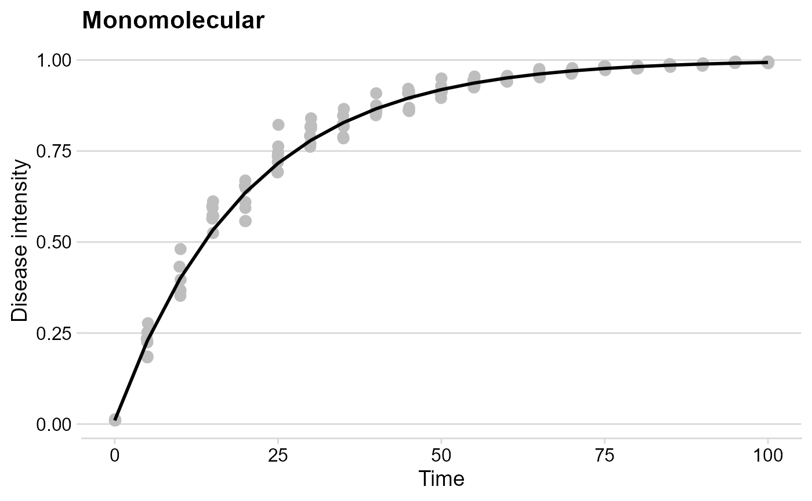
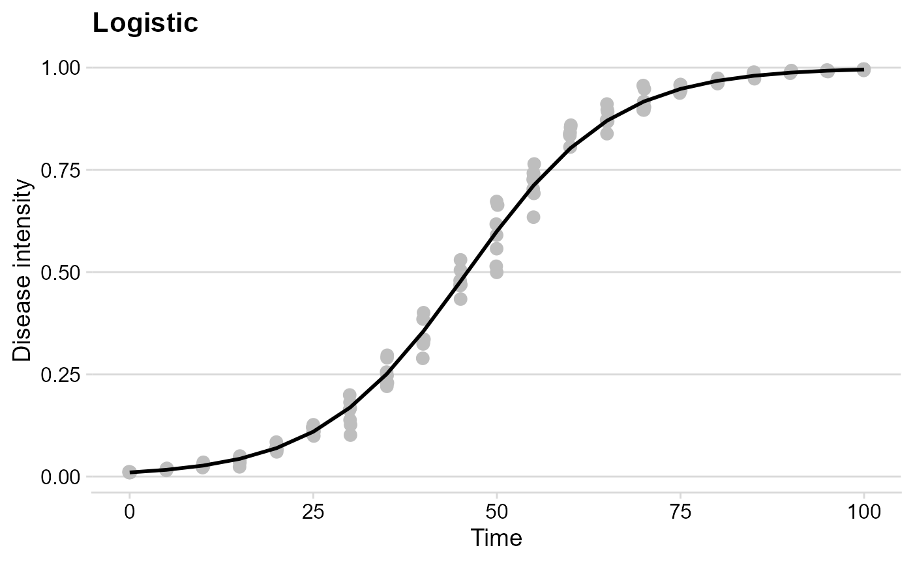
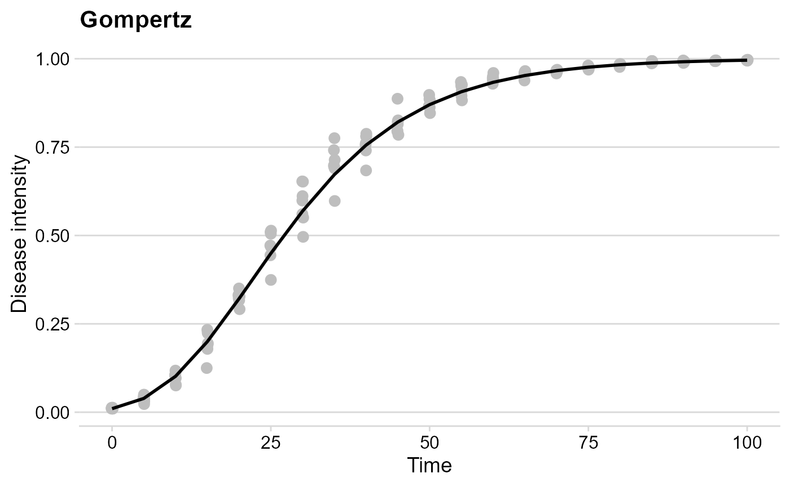
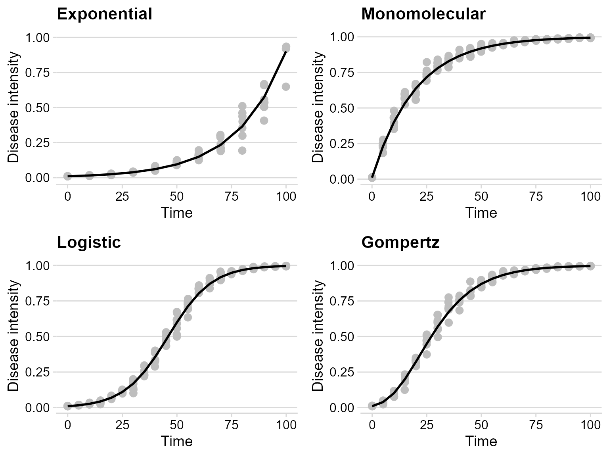

Simulating disease progress curves
Kaique S Alves
2020-11-26
Source:vignettes/simulation.Rmd
simulation.RmdIntroduction
In epiffiter, opposite to the fit_ functions (estimate parameters from fitting models to the data), the sim_ family of functions allows to produce the DPC data given a set of parameters for a specific model. Currently, the same four population dynamic models that are fitted to the data can be simulated.
The functions use the ode() function of the devolve package (Soetaert,Petzoldt & Setzer 2010) to solve the differential equation form of the e epidemiological models.
Hands On
The basics of the simulation
The sim_ functions, regardless of the model, require the same set of six arguments. By default, at least two arguments are required (the others have default values)
-
r: apparent infection rate -
n: number of replicates
When n is greater than one, replicated epidemics (e.g. replicated treatments) are produced and a level of noise (experimental error) should be set in the alpha argument. These two arguments combined set will generate random_y values, which will vary randomly across the defined number of replicates.
The other arguments are:
-
N: epidemic duration in time units -
dt: time (fixed) in units between two assessments -
y0: initial inoculum -
alpha: noise parameters for the replicates
Exponential
Let’s simulate a curve resembling the exponential growth.
exp_model <- sim_exponential( N = 100, # total time units y0 = 0.01, # initial inoculum dt = 10, # interval between assessments in time units r = 0.045, # apparent infection rate alpha = 0.2,# level of noise n = 7 # number of replicates ) head(exp_model)
## replicates time y random_y
## 1 1 0 0.01000000 0.01000000
## 2 1 10 0.01568425 0.02014028
## 3 1 20 0.02459905 0.01862698
## 4 1 30 0.03858028 0.05250216
## 5 1 40 0.06050749 0.06196341
## 6 1 50 0.09489670 0.08889183A data.frame object is produced with four columns:
-
replicates: the curve with the respective ID number -
time: the assessment time -
y: the simulated proportion of disease intensity -
random_y: randomly simulated proportion disease intensity based on the noise
Use the ggplot2 package to build impressive graphics!
exp_plot = exp_model %>% ggplot(aes(time, y)) + geom_jitter(aes(time, random_y), size = 3,color = "gray", width = .1) + geom_line(size = 1) + theme_minimal_hgrid() + ylim(0,1)+ labs( title = "Exponential", y = "Disease intensity", x = "Time" ) exp_plot
## Warning: Removed 3 rows containing missing values (geom_point).
Monomolecular
The logic is exactly the same here.
mono_model <- sim_monomolecular( N = 100, y0 = 0.01, dt = 5, r = 0.05, alpha = 0.2, n = 7 ) head(mono_model)
## replicates time y random_y
## 1 1 0 0.0100000 0.01054712
## 2 1 5 0.2289861 0.21603797
## 3 1 10 0.3995322 0.34598177
## 4 1 15 0.5323535 0.52107145
## 5 1 20 0.6357949 0.65736470
## 6 1 25 0.7163551 0.72304662mono_plot = mono_model %>% ggplot(aes(time, y)) + geom_jitter(aes(time, random_y), size = 3, color = "gray", width = .1) + geom_line(size = 1) + theme_minimal_hgrid() + labs( title = "Monomolecular", y = "Disease intensity", x = "Time" ) mono_plot

The Logistic model
logist_model <- sim_logistic( N = 100, y0 = 0.01, dt = 5, r = 0.1, alpha = 0.2, n = 7 ) head(logist_model)
## replicates time y random_y
## 1 1 0 0.01000000 0.01236018
## 2 1 5 0.01638216 0.01607749
## 3 1 10 0.02672677 0.02602447
## 4 1 15 0.04331509 0.02879248
## 5 1 20 0.06946352 0.06244196
## 6 1 25 0.10958806 0.06453967logist_plot = logist_model %>% ggplot(aes(time, y)) + geom_jitter(aes(time, random_y), size = 3,color = "gray", width = .1) + geom_line(size = 1) + theme_minimal_hgrid() + labs( title = "Logistic", y = "Disease intensity", x = "Time" ) logist_plot

Gompertz
gomp_model <- sim_gompertz( N = 100, y0 = 0.01, dt = 5, r = 0.07, alpha = 0.2, n = 7 ) head(gomp_model)
## replicates time y random_y
## 1 1 0 0.01000000 0.01000000
## 2 1 5 0.03896283 0.04543135
## 3 1 10 0.10158896 0.12239552
## 4 1 15 0.19958740 0.19683058
## 5 1 20 0.32122825 0.24715579
## 6 1 25 0.44922018 0.37184167gomp_plot = gomp_model %>% ggplot(aes(time, y)) + geom_jitter(aes(time, random_y), size = 3,color = "gray", width = .1) + geom_line(size = 1) + theme_minimal_hgrid() + labs( title = "Gompertz", y = "Disease intensity", x = "Time" ) gomp_plot

Combo
Use the function plot_grid() from the cowplot package to gather all plots into a grid
plot_grid(exp_plot, mono_plot, logist_plot, gomp_plot)
## Warning: Removed 3 rows containing missing values (geom_point).
References
Karline Soetaert, Thomas Petzoldt, R. Woodrow Setzer (2010). Solving Differential Equations in R: Package deSolve. Journal of Statistical Software, 33(9), 1–25. DOI: 10.18637/jss.v033.i09